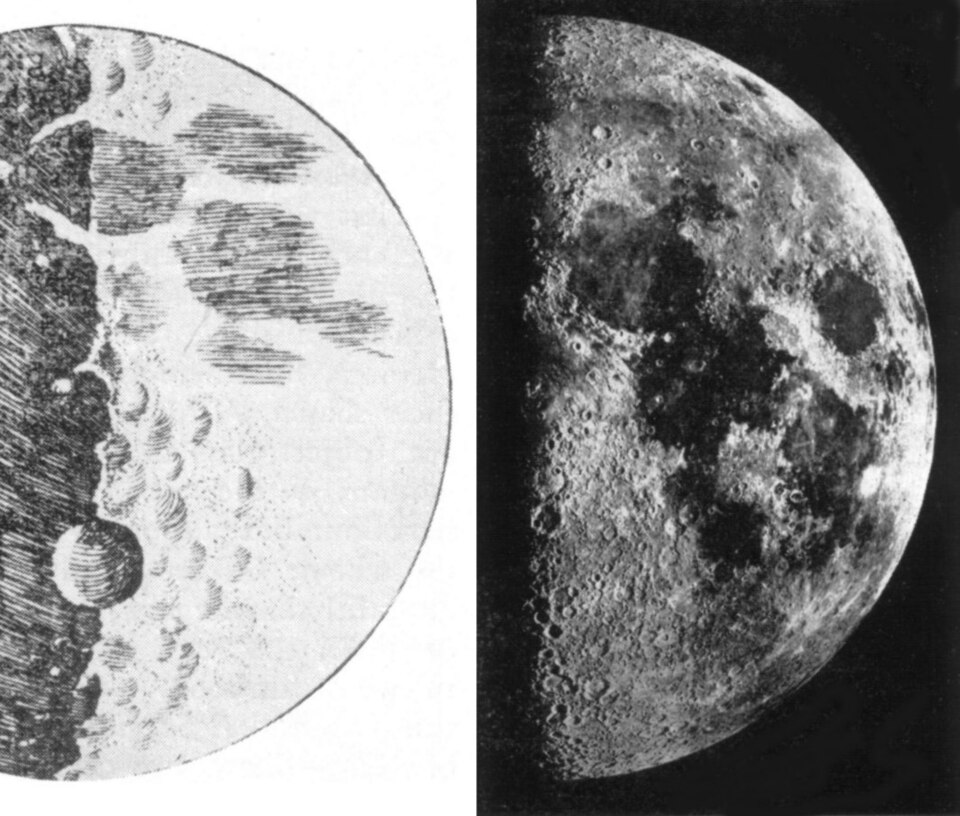
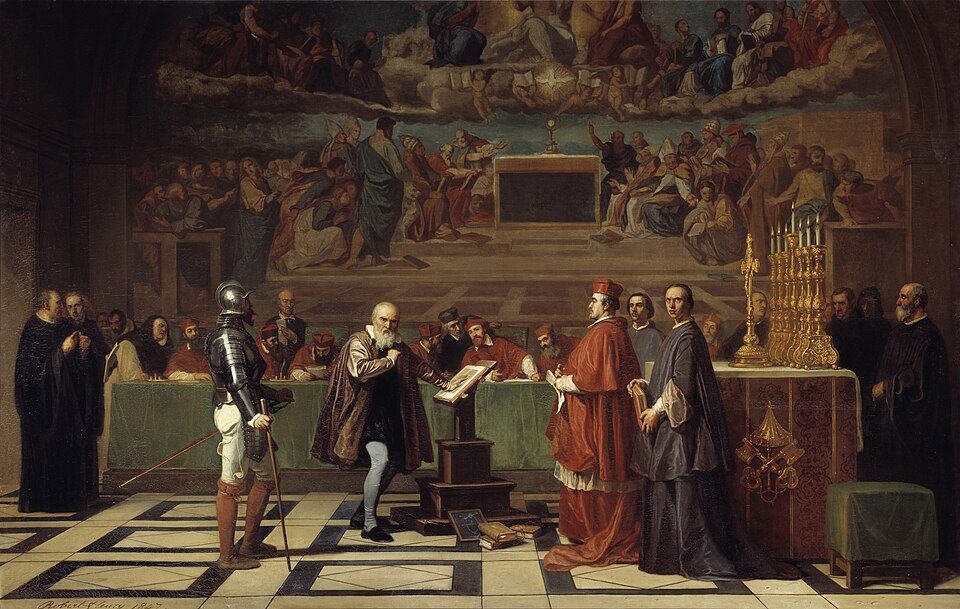
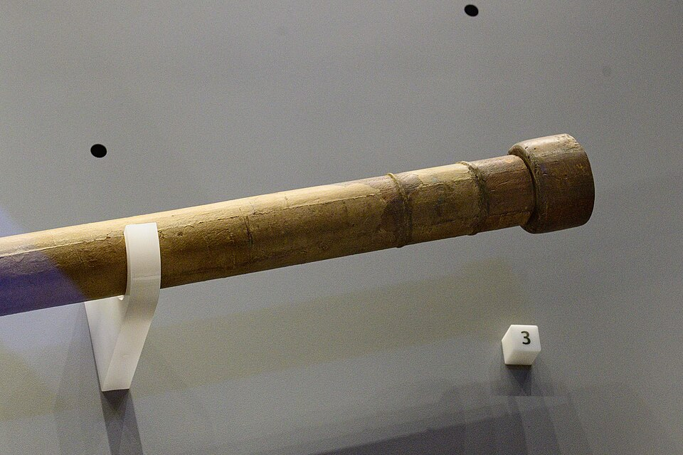

⏱️ 10초 카드 · 과학혁명 (1564~1642)
망원경지동설그래도 지구는 돈다
여는 질문 — '책'과 '하늘'이 서로 다를 때, 무엇을 믿어야 할까?
이름
한국어갈릴레이
원어Galileo Galilei
실제 발음갈릴레오 갈릴레이
로마자Galileo Galilei
영어권Galileo Galilei
별칭근대 과학의 아버지
왜 이 사람인가
이 도감에서 갈릴레이는 '증거가 권위를 이긴다'는 근대 과학의 정신 그 자체예요. 동시에 그는 재판 앞에서 자기 주장을 철회한 사람이기도 하죠. 진리를 위해 죽을 것인가, 살아남아 더 많은 일을 할 것인가 — 오펜하이머와 짝지어 읽으면 '과학자와 권력'이라는 영원한 질문이 또렷해져요.
생애
피사의 몰락한 귀족 음악가의 아들로, 의학도였다가 수학으로 돌아섰어요. 경사면 실험으로 낙하 법칙을 밝혀 '주장 말고 측정'이라는 근대 과학의 방법을 세웠죠.
1609년 직접 갈아 만든 망원경으로 달의 산맥, 목성의 위성들, 금성의 위상을 관측해 『별의 전령』으로 발표했어요 — 지동설의 결정적 증거들이었죠. 라틴어 대신 이탈리아어로 책을 써서 과학을 학자들의 골방에서 광장으로 끌어낸 것도 그예요.
1633년 종교재판에서 지동설 철회를 강요당해 서명했고, 가택연금 속에서도 『새로운 두 과학』을 몰래 출판해 역학의 기초를 완성했어요. '그래도 지구는 돈다'는 전설의 한마디는 기록엔 없지만 — 그의 삶 전체가 그 말을 살았죠. 교황청의 공식 과오 인정은 1992년, 359년 뒤였어요.
자료로 보기 — 유묵·사진



남긴 말
“그래도 지구는 돈다.”
종교재판에서 철회 서명을 한 뒤 중얼거렸다는 전설 — 기록엔 없지만, 그의 삶 전체가 이 말이었어요. · 출처: 후대의 전설(기록 근거 없음 — 그래서 더 유명해진 말)
“성경은 하늘이 '어떻게 가는지'가 아니라, '어떻게 하늘에 가는지'를 가르친다.”
과학과 신앙은 서로 다른 영역을 다룬다며 — 재판을 부른 편지에서. · 출처: 크리스티나 대공비에게 보낸 편지 1615 (요지)
연표
- 1564피사에서 출생
- 1609~10망원경 관측 — 『별의 전령』
- 1632『두 우주 체계에 관한 대화』 — 재판의 빌미
- 1633종교재판 — 철회·가택연금
- 1642사망 (그해 뉴턴 출생)
생애의 길 — 피사에서 아르체트리까지 🗺️
사탑의 도시에서 하늘을 본 도시로, 그리고 재판과 연금으로. 번호를 차례로 눌러 보세요.
현재 지도 위 경로예요. 하늘을 향했던 망원경이, 결국 작은 시골집의 연금으로 끝났어요 — 그러나 그가 그 집에서 쓴 마지막 책이 뉴턴에게 닿았죠.
빛과 그림자증거로 권위에 맞선 빛 — 그리고 재판 앞에서 철회를 택한 그림자(혹은 살아남아 더 큰 책을 남긴 지혜?). 순교와 생존 사이의 그 선택을 어떻게 평가할지는, 이 도감이 너에게 넘기는 숙제예요.
더 깊이 (고등·일반)
측정이 주장을 이긴다 — 근대 과학의 방법
피사의 몰락한 귀족 음악가의 아들로 태어나 의학도였다가 수학으로 돌아섰어요. 그는 '아리스토텔레스가 그렇게 말했으니까'가 아니라, 경사면에 공을 굴려 직접 시간을 재며 낙하 법칙을 밝혔죠. '권위가 아니라 측정으로 따진다' — 이 단순한 태도의 전환이 곧 근대 과학의 시작이었어요.
참고: 갈릴레이의 역학 실험 일반
망원경이 본 것 — 『별의 전령』(1610)
1609년, 직접 갈아 만든 망원경으로 하늘을 본 갈릴레이는 충격적인 것들을 발견했어요 — 달의 울퉁불퉁한 산맥(하늘은 완벽하지 않았다!), 목성을 도는 위성 4개(모든 것이 지구를 돌지는 않는다!), 금성의 위상 변화. 모두 지동설의 강력한 증거였죠. 그는 이걸 라틴어가 아닌 이탈리아어로 써서, 과학을 학자들의 골방에서 광장으로 끌어냈어요.
참고: 『시데레우스 눈치우스』(별의 전령) 1610 일반
1633년 종교재판 — 철회
지동설을 옹호한 『두 우주 체계에 관한 대화』(1632)가 빌미가 됐어요. 종교재판에 회부된 갈릴레이는 지동설 철회를 강요당해 서명했고, 코페르니쿠스의 책은 금서가 됐으며 그는 남은 생을 가택연금 속에 보내야 했죠. 진리를 알면서도 살아남기 위해 무릎을 꿇어야 했던, 과학사에서 가장 무거운 장면 중 하나예요.
참고: 1633년 종교재판 일반
연금 속의 걸작 — 『새로운 두 과학』(1638)
눈이 멀어 가는 가택연금 속에서도 갈릴레이는 포기하지 않았어요. 평생의 역학 연구를 정리한 『새로운 두 과학』을 (금지를 피해) 네덜란드에서 몰래 출판했죠. 이 책이 운동과 재료의 과학을 체계화하며 — 그가 죽은 해에 태어난 뉴턴으로 이어지는 다리가 됐어요.
참고: 『새로운 두 과학』 1638 일반
359년 뒤의 사과
교황청이 '갈릴레이가 옳았고 교회가 틀렸다'를 공식 인정한 것은 1992년 — 재판으로부터 무려 359년 뒤였어요. 한 사람의 옳음을 권위가 인정하는 데 얼마나 오랜 시간이 걸릴 수 있는지, 그리고 그 사이에도 진실은 묵묵히 그 자리에 있었다는 것을 보여 주는 이야기예요.
참고: 1992년 교황청의 공식 인정 일반
사람의 그물 — 함께 읽을 인물
더 공부하기 — 여기서 출발하세요
📚 책으로
- 갈릴레오의 딸 ↗ · 데이바 소벨수녀가 된 딸의 편지로 읽는, 인간 갈릴레이의 마지막 시절.
- 시데레우스 눈치우스 (별의 전령) ↗ · 갈릴레오 갈릴레이망원경 관측을 기록한, 과학사를 바꾼 얇은 책.
📜 1차 사료
- 『별의 전령』(Sidereus Nuncius) 1610 ↗달 스케치와 목성의 위성이 처음 실린 원본.
🎬 영상으로
- PBS NOVA 〈Galileo's Battle for the Heavens〉 ↗🟢 내가 추천한 책 『갈릴레오의 딸』을 바탕으로 만든 다큐멘터리 — PBS 공식 페이지에서 볼 수 있어요(영어).
📍 가 볼 곳
- 피사 (이탈리아)그가 태어나고 낙하의 법칙을 따진 사탑의 도시.
- 갈릴레오 박물관 (피렌체) ↗그의 망원경과 (보존된) 손가락이 전시된 곳.